Clase 3: Conocimiento de los datos#
Giovanni D. Rottoli, PhD.
Recordemos…#
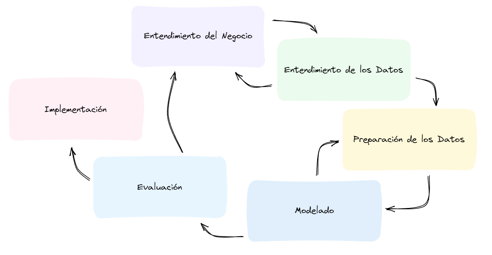
Recordemos…#
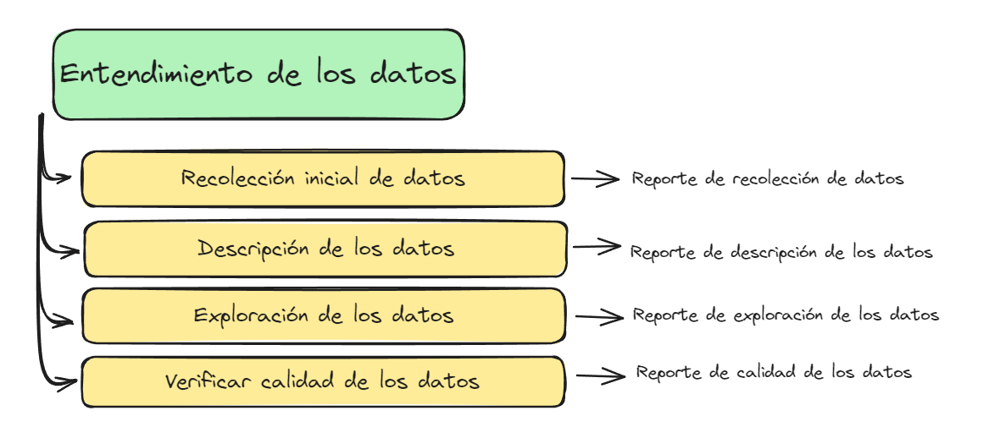
Datos#
Datos estructurados vs no-estructurados#
Un conjunto de datos es estructurado si poseen un esquema predefinido.
Todas las entidades de la base de datos poseen valores para un mismo conjunto de atributos.
Se pueden relacionar unas entidades con otras mediante atributos relacionales.
Datos estructurados vs no-estructurados#
Un conjunto de datos no estructurado, no posee un modelo o esquema de datos pre-establecido.
Pueden ser de varios tipos: texto, imágenes, video, audio, correos electrónicos, etc.
Por lo general, los algoritmos de minería de datos requieren cierta estructura, por lo que se deben preprocesar para extraer características y descriptores.
Datos No-Dependientes Vs Datos Dependientes#
Cada entidad de la base de datos posee un conjunto de atributos que la describe.
Son datos, generalmente, estructurados.
Datos No-Dependientes Vs Datos Dependientes#
Cada entidad de la base de datos posee dos tipos de atributos:
Atributos de comportamiento, que describen a la entidad en si, tal como en una base de datos no-dependiente.
Atributos contextuales, que permiten contextualizar los valores de los atributos de comportamiento.
Por ejemplo, datos espaciales, datos temporales, datos espaciotemporales, imágenes, textos, audios, etc.
Fuentes de datos#
Las fuentes de datos son de lo más variadas.
Muchas son bien conocidas y extraer los datos de dicha fuente resulta trivial
Otras requieren de procesamiento adicional.
Archivos#
CSV, TSV, etc.
Planillas de cálculo (Excel),
Código fuente,
Texto en PDF,
Formularios,
Imágenes,
Archivos de audio,
archivos de video.
etc…etc…etc…
Bases de datos#
Las bases de datos son almacenes electrónicos de datos que permiten realizar gestionar estos datos de forma más eficiente mediante distintas estrategias, como el uso de índices de consulta, por ejemplo.
SQL#
PostgreSQL, MYSQL, etc.
NO-SQL#
Documentales (MongoDB)
Grafos (Neo4J)
Clave-valor (Redis)
Columnares (Cassandra)
Vectoriales (Qdrant)
Etc. etc. etc.
Repositorios digitales#
Repositorios de imágenes
Repositorios de audio
Repositorios de video
Descripción de los datos#
Para comprender mejor los datos con los que trabajamos, debemos describirlos.
No solo se deben describir los orígenes de los datos, sino también:
Tipo de datos
Composición de la base de datos (Cantidad de entidades, por ejemplo)
Atributos
Tipos, valores, distribución, relaciones.
Tipos de atributos#
Al igual que con los datos, podemos utilizar varias categorizaciones.
Por ejemplo, podemos clasificarlos según su rol: atributos de comportamiento y atributos contextuales.
O según la naturaleza de sus datos: cuantitativos vs cualitativos.
O según su codificación: numéricos vs categóricos.
Según su naturaleza#
Cuantitativos#
Expresan una cantidad y, generalmente, se codifican mediante números naturales o reales. Por ejemplo:
Edad
Altura
Peso
Precio
Cualitativos#
Expresan una cualidad de la entidad, y se codifican, generalmente, mediante etiquetas. Por ejemplo:
Color
Estado civil
Nacionalidad
Según su codificación#
Datos numéricos#
Toma valores de conjuntos numéricos discretos o contínuos, finitos o infinitos, como los Reales, los Naturales, los Enteros, valores booleanos, etc.
Datos categóricos#
Toma valores de conjuntos finitos de categorías, como conjunto de estados civiles, conjunto de nacionalidades, Verdadero o Falso, etc.
Datos Binarios#
Toman valores de un conjunto de cardinalidad 2:
Simétricos: Si ambos valores tienen el mismo peso o relevancia: $\(\{\text{Argentino}, \text{Extranjero} \}\)$
Asimétricos: Si uno de los valores tiene más relevancia que el otro en el dominio del problema: $\(\{\text{Seropositivo}, \text{Seronegativo} \}\)$
Son generalmente categóricos, aunque se los puede representar de forma numérica con los valores 0 y 1.
Datos Ordinales#
Toman valores de un conjunto ordenado y son, generalmente, categóricos, aunque se los puede codificar de forma numérica.
Por ejemplo: $\( \{\text{Infante}, \text{Adolescente}, \text{Adulto}, \text{Anciano} \} \)$
La distancia entre cada par de valores se puede calcular a partir del órden.
Se pueden obtener de discretizar atributos contínuos (Edad, por ejemplo.)
Se deben tratar como valores cualitativos aunque su codificación sea numérica (No se puede calcular el promedio, por ejemplo.)
Exploración de los datos#
La exploración de los datos busca determinar el comportamiento de estos atributos, para comprender cómo se distribuyen sus valores e identificar posibles tendencias.
Por ejemplo, algunos algoritmos necesitan que los atributos que utilicemos no estén correlacionados, por lo que deberemos analizar esto.
Descriptores estadísticos#
Medidas de tendencia central#
Promedio: Dado un conjunto de observaciones \(D=X_1, X_2, \cdots , X_n\), el promedio es: \( \bar{X} = \frac{ \sum X_i}{n} \)
Mediana: Es el valor que parte el conjunto de datos, ordenado, en dos partes de igual cardinalidad.
Moda: Valor más común o de mayor frecuencia en la base de datos.
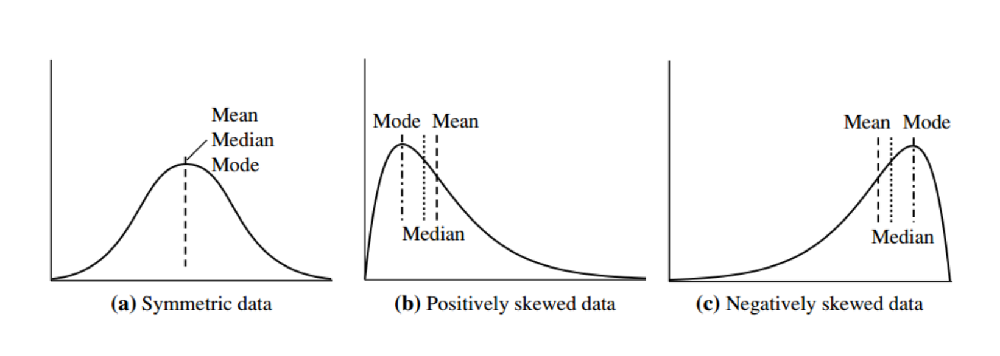
Medidas de dispersión#
Varianza: $\( \sigma^2 = \frac{1}{n} \sum(x_i - \bar{x})^2 \)$
Desviación estandar: $\( \sigma = \sqrt{\sigma^2} \)$
Rango: $\(Max(X) - Min(X) \)$
Cuartiles: Dividen el rango en 4 partes de igual tamaño.
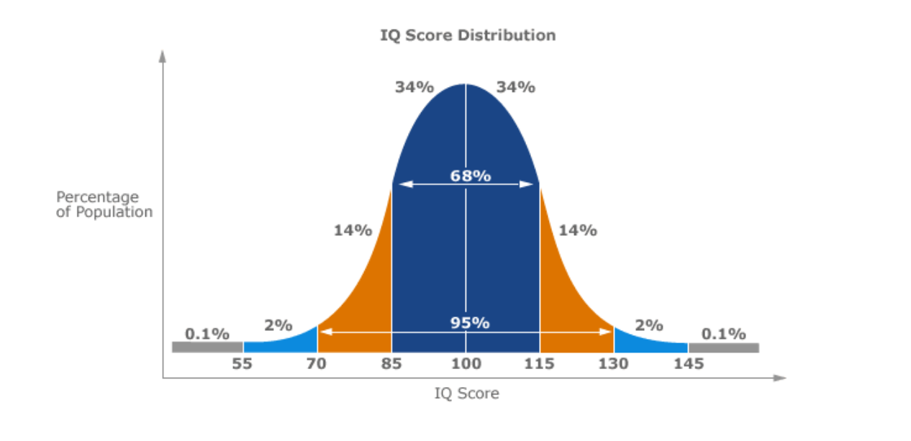
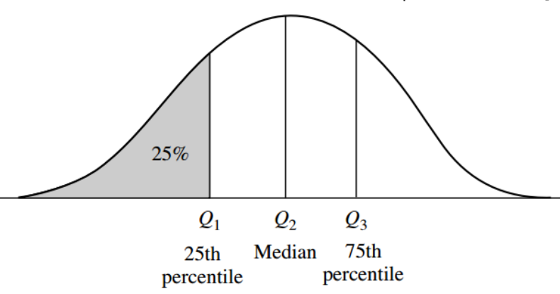
Medidas de forma#
Curtosis: Indica que tan apuntada o achatada se encuentra una distribución respecto a un comportamiento normal (distribución normal).
Asimetría: Mide el grado de asimetría de la distribución con respecto a la media.
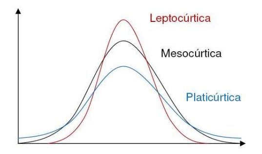
Visualización de datos#
Una visualización es cualquier tipo de presentación visual de los datos de una base de datos.
Permiten comprender ciertas propiedades de los datos, como la distribución de valores de sus atributos o relaciones entre los mismos.
Nos valoremos de la capacidad humana de detectar patrones de forma visual.
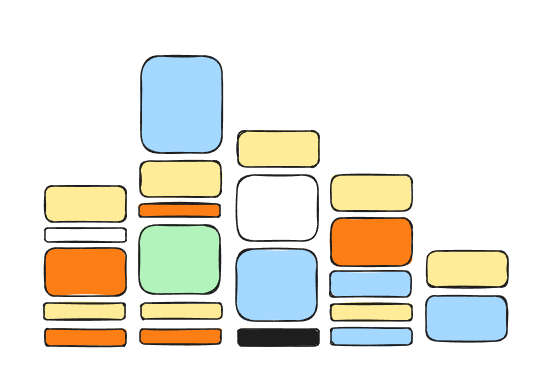
Ventajas#
Podemos procesar información visualmente de forma muy rápida.
Se puede compartir esta información de forma eficiente.
Existe una ámplia variedad de gráficos para detectar distintos tipos de patrones o comportamientos.
Desventajas#
Las visualizaciones pueden funcionar bien para comprender fenómenos globales.
Con muchos datos, se pueden esconder anomalías.
Las conclusiones que obtenemos pueden estar sesgadas o ser incorrectas.
Demasiados datos juntos pueden ocasionar problemas de interpretación.
Tipos de gráficos#
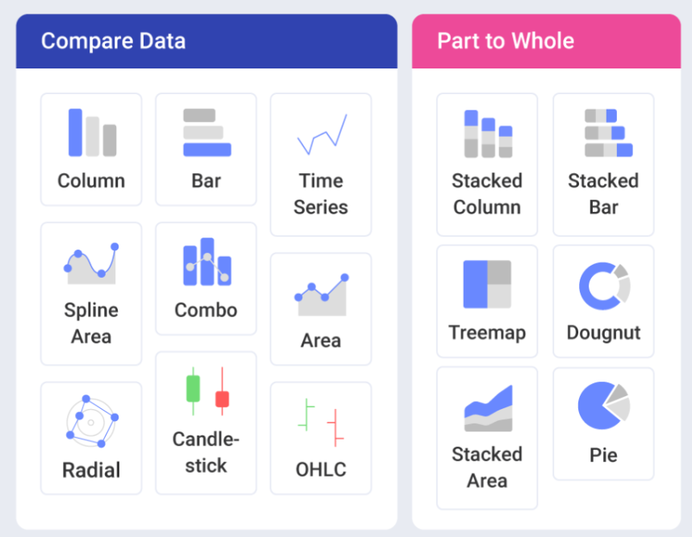
https://www.slingshotapp.io/blog/9-best-data-visualization-examples
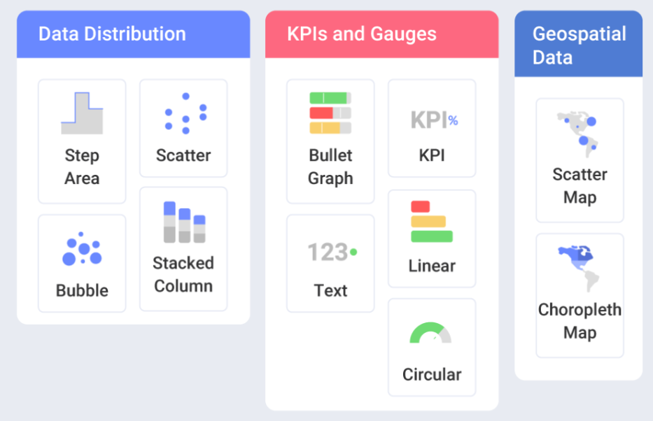
Códigos visuales#
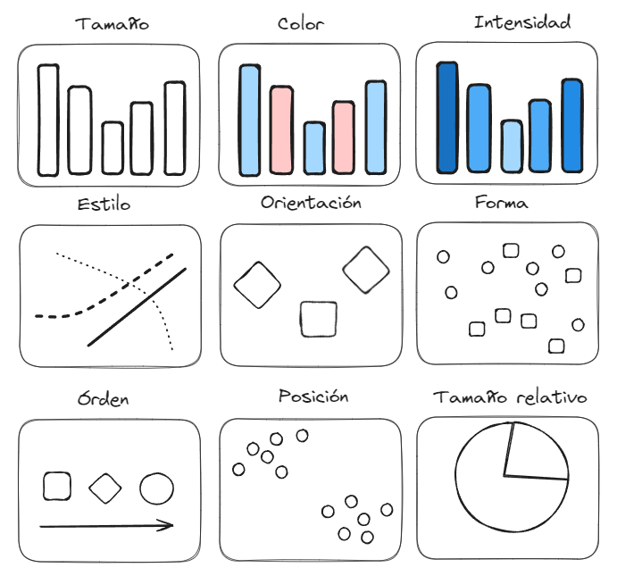
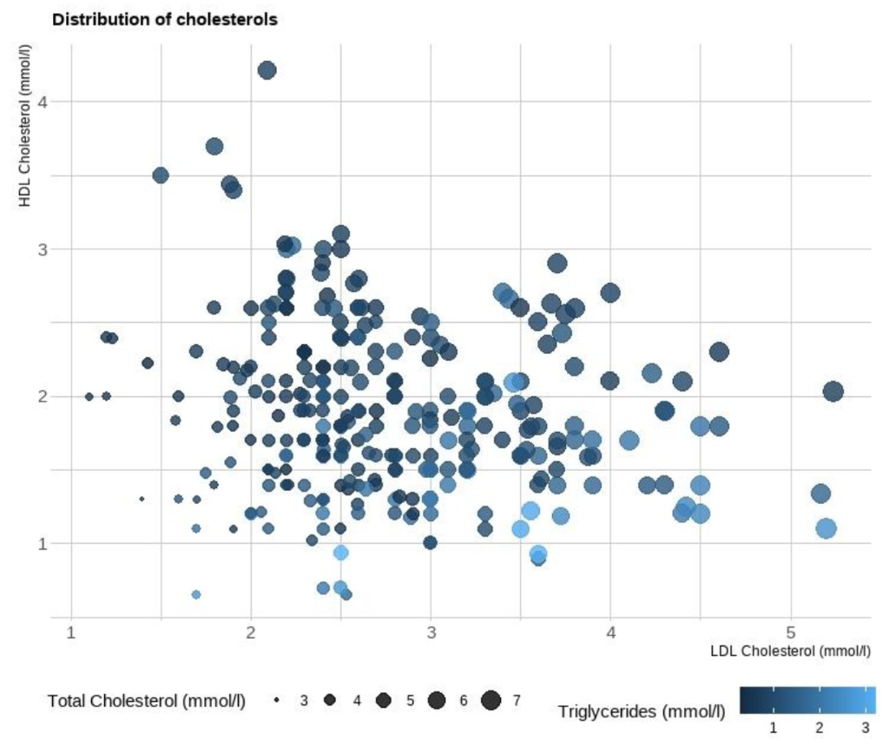
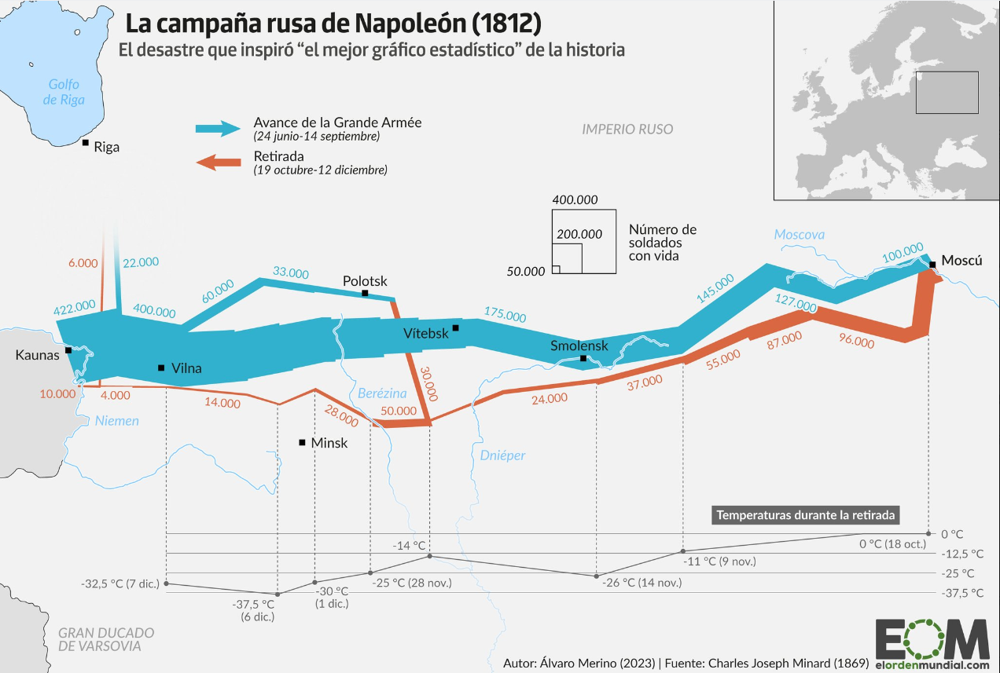
Calidad de los datos#
Completitud#
Se refiere a la proporción de datos que se encuentran perdidos en el conjunto de datos.
Pueden existir filas, columnas, o celdas en blanco.
En algunos casos los datos se pierden por problemas en el canal, o porque no se han recolectado, o porque la fuente se encuentra corrupta.
En otros casos, la falta de datos puede ser un dato en si mismo.
Temporalidad#
Se refiere a la antigüedad de los datos.
Datos desactualizados pueden no ser representativos de la realidad.
No tiene sentido determinar cómo se comporta un virus con datos del 2000, si es un virus que muta constantemente.
Datos complétos pero desactualizados pueden no ser útiles.
Validez#
Los datos son válidos si no siguen formatos, reglas o procesos adecuados para el problema a solucionar.
Por ejemplo, la recolección de datos para un estudio clínico debe ser doble ciego.
En algunos casos, la codificación de datos está realizada de forma inadecuada, y se necesita re-codificarlos.
Los datos obtenidos de forma ilegal o de forma poco étic también pueden considerarse inválidos.
Integridad#
Integrity of data refers to the level at which the information is reliable and trustworthy. Is the data true and factual? For example, if your database has an email address assigned to a specific customer, and it turns out that the customer actually deleted that account years ago, then there would be an issue with data integrity as well as timeliness.
Consistencia#
Consistency of data is most often associated with analytics. It ensures that the source of the information collection is capturing the correct data based on the unique objectives of the department or company.
For example, let’s say you have two similar pieces of information:
the date on file for the opening of a customer’s account vs.
the last time they logged into their account.
The difference in these dates may provide valuable insights into the success rates of current or future marketing campaigns.
Determining the overall quality of company data is a never-ending process. The most crucial components of effective data quality management are the identification and resolution of potential issues quickly and proactively.
Bibliografía adicional#
Josep Ferrer (2023), Data Visualization: Theory and Techniques. KDnuggets. https://www.kdnuggets.com/data-visualization-theory-and-techniques
Data Visualization Chart types. https://www.datylon.com/blog/types-of-charts-graphs-examples-data-visualization